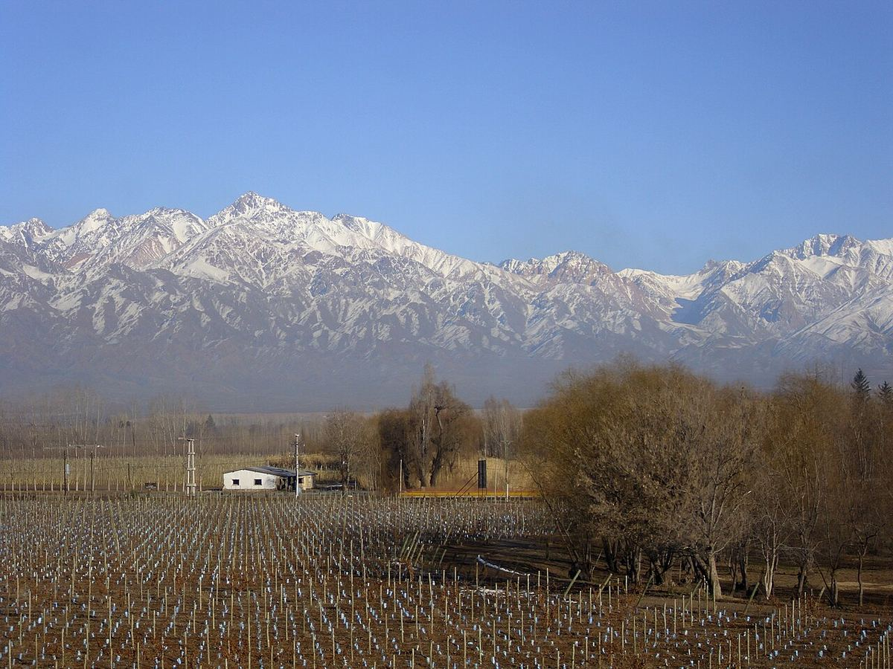

TINTO
El Valle de Uco, en el centro-oeste de Mendoza, reúne algunos de los viñedos más altos y frescos de la provincia. Desde los años noventa se ha convertido en la zona de referencia para la Malbec de altura.

El Valle de Uco tiene una larga tradición agrícola, con frutales y algunas viñas antiguas, especialmente en torno a La Consulta, en San Carlos. Sin embargo, su gran transformación vitícola comenzó en los años noventa, cuando productores argentinos y extranjeros buscaron zonas más frescas que las tradicionales de Luján de Cuyo y Maipú. Plantaciones pioneras en altitudes elevadas, como las de la familia Catena en Gualtallary, mostraron el potencial de la zona, y en pocas décadas el valle se llenó de fincas y bodegas, algunas de arquitectura muy llamativa.
El valle se extiende al sur de la ciudad de Mendoza, a lo largo del río Tunuyán y de numerosos arroyos que bajan de la cordillera, y abarca tres departamentos: Tupungato, Tunuyán y San Carlos. Los viñedos se sitúan aproximadamente entre 900 y más de 1.600 metros de altitud, al pie del cordón del Plata y del volcán Tupungato. El clima es más fresco que en el resto de Mendoza, con noches frías, gran amplitud térmica y una radiación solar intensa. Las heladas primaverales y el granizo son riesgos importantes, por lo que muchas fincas usan mallas antigranizo.
Los suelos son aluviales y muy heterogéneos: arenas y limos en algunos sectores, y en otros abundantes cantos rodados y gravas, a veces cubiertos de carbonato de calcio. Esta diversidad, visible incluso dentro de una misma finca, ha impulsado la elaboración de vinos por parcelas.
Se han reconocido varias Indicaciones Geográficas dentro del valle, entre ellas Gualtallary en Tupungato, Los Chacayes y San Pablo en Tunuyán, y Paraje Altamira, La Consulta y Pampa El Cepillo en San Carlos. Cada una tiene rasgos propios de altitud, exposición y suelo: Gualtallary es conocida por sus suelos con calcáreo y sus vinos tensos, y Paraje Altamira por sus cantos rodados.
La Malbec es la variedad principal y da aquí vinos de color profundo pero con una acidez marcada, notas florales y taninos firmes y finos. También se cultivan con éxito la Cabernet Franc, la Pinot Noir, la Chardonnay y la Sauvignon Blanc, que aprovechan el clima fresco. Muchos productores recurren a fermentaciones en hormigón, a fudres y a un uso más moderado de la barrica nueva para preservar la expresión del lugar.
Cada vez más etiquetas indican el nombre de la IG o del paraje de origen, una práctica que refleja el interés creciente por expresar las diferencias entre los distintos sectores del valle.